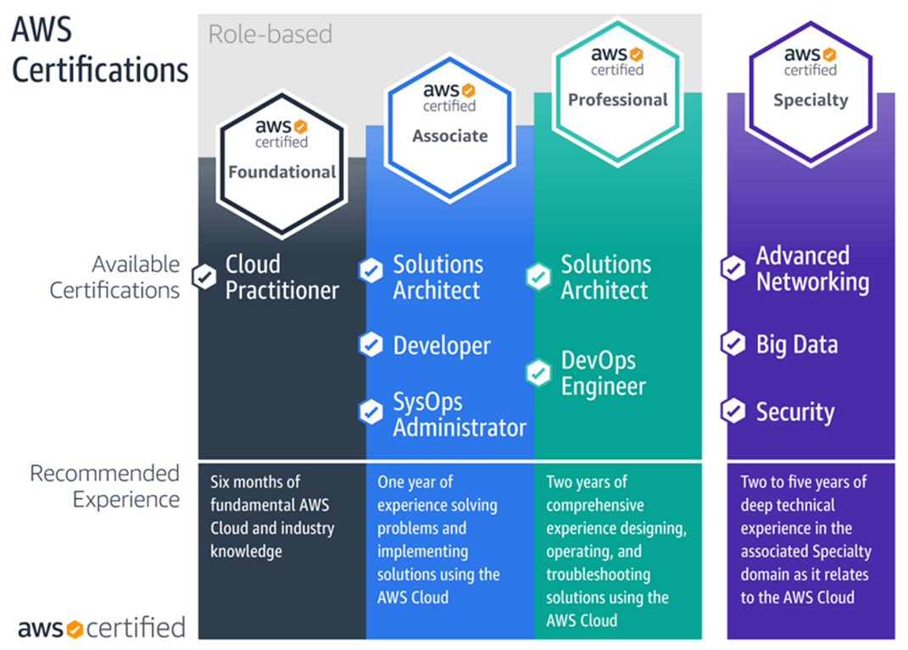

O QUE É AWS?
A AWS é uma plataforma de nuvem segura que oferece um amplo conjunto de produtos globais baseados na nuvem.
-
A AWS oferece acesso sob demanda a recursos de computação, armazenamento, rede, banco de dados e outros recursos de TI e ferramentas de gerenciamento.
-
A AWS oferece flexibilidade.
-
Você paga apenas pelos serviços individuais de que precisa, pelo tempo que os utilizar.
-
Os serviços da AWS funcionam juntos como componentes básicos.
POR QUE USAR AWS?
Além de ser um das maiores plataformas de serviços temos alguns tópicos bastante importantes:
VANTAGENS
-
Escalabilidade automática para lidar com mudanças de demanda.
-
Alta disponibilidade e confiabilidade global.
-
Pagamento por uso (sem investimento inicial).
-
Segurança robusta e certificações internacionais.
-
Ampla gama de serviços para todos os tipos de projetos.
CERTIFICAÇÃO
A certificação AWS é um reconhecimento oficial fornecido pela própria Amazon que comprova os conhecimentos e habilidades de um profissional em utilizar os serviços da AWS para diferentes finalidades, como desenvolvimento, administração de sistemas, arquitetura de soluções, segurança, entre outros. Por que tirar uma certificação AWS?
-
Aumenta a credibilidade profissional.
-
Melhora as oportunidades de emprego.
-
Demonstra domínio prático dos serviços AWS.
-
Segurança robusta e certificações internacionais.
-
Pode ser um diferencial para trabalhar com projetos cloud, DevOps, dados ou segurança.
CERTIFICAÇÕES COM VÁRIOS NÍVEIS

O QUE É A ACADEMY?
A AWS Academy é um programa educacional criado pela Amazon Web Services para instituições de ensino superior (como faculdades, universidades e escolas técnicas), com o objetivo de ensinar computação em nuvem usando o conteúdo oficial da AWS.
Cursos prontos e atualizados, desenvolvidos pela própria AWS. Ambientes práticos em nuvem (laboratórios com créditos AWS) e preparativos para certificações como:
-
Cloud Practitioner.
-
Solutions Architect.
-
Developer.
Acesso a plataformas de aprendizado online, como AWS Academy Learner Lab, todos com certificado de conclusão dos cursos.